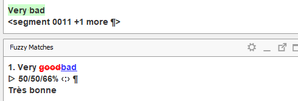
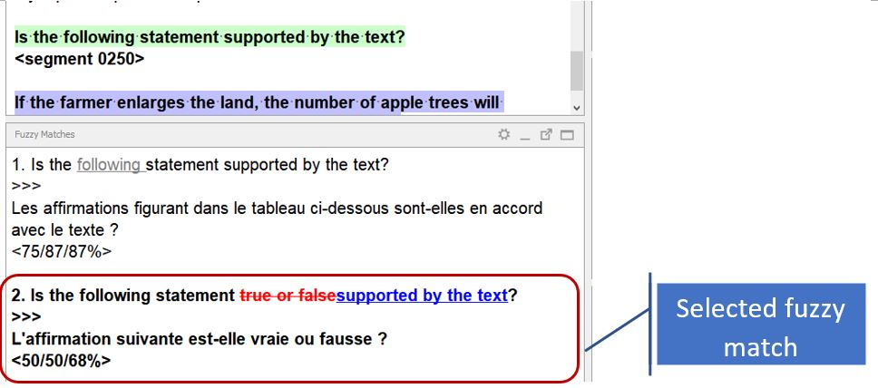
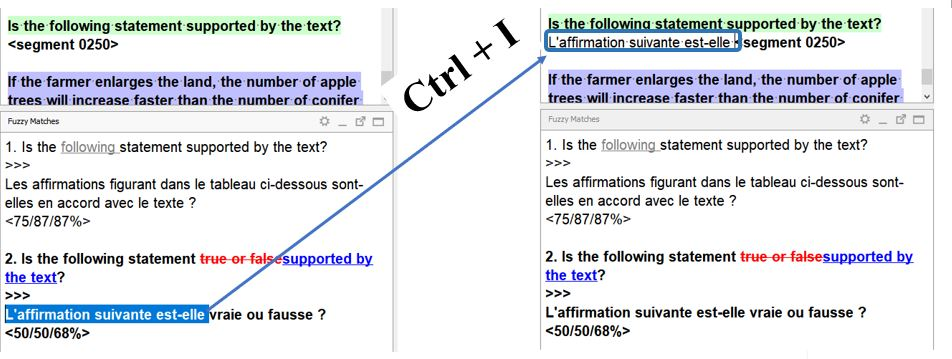

Нечеткие совпадения¶
Переводы сохраняются в рабочей памяти переводов проекта. При открытии сегмента, похожего на уже переведенный, на панели Matches (Нечеткие совпадения) появляются предложения по переводу (или совпадения).
Различия исходного текста отмечаются в области Matches (Нечеткие совпадения) в стиле «отслеживания изменений» (т. е. старыйновый текст). Благодаря этому можно увидеть разницу между текстом оригинала в текущем сегменте и текстом оригинала в выбранном совпадении (т. е. ранее переведенном сегменте).
- Те части текста, которые есть в совпадении, но отсутствуют в текущем сегменте, отмечаются
перечеркиванием - Части текста, которые есть текущем сегменте, но отсутствуют в совпадении, отмечаются
подчеркиванием

Кроме того, в области Matches (Нечеткие совпадения) отображается процент схожести, благодаря которому можно определить, насколько текущий исходный текст отличается от исходного текста в выбранном совпадении.
Если для текущего сегмента найдено несколько соответствий, они будут отсортированы по уровню схожести с текущим сегментом. Выбранное соответствие выделяется жирным (по умолчанию выбирается первое совпадение в списке). Если вы хотите использовать другое соответствие, щелкните по нему дважды для изменения выбора.

Чтобы вставить совпадение полностью, нажмите на клавиатуре Ctrl+I. После вставки текста не забудьте сделать необходимые изменения, чтобы перевод соответствовал оригиналу текущего сегмента.
Можно также вставить только часть совпадения или объединить текст нескольких совпадений:
- Дважды щелкните по тому совпадению, которое нужно сделать активным
- Выберите мышью часть текста, который вы желаете вставить
- Нажмите сочетание клавиш Ctrl+I для вставки текста
Повторите эти же действия для вставки других совпадений или их частей, если это необходимо, или закончите перевод сегмента.
